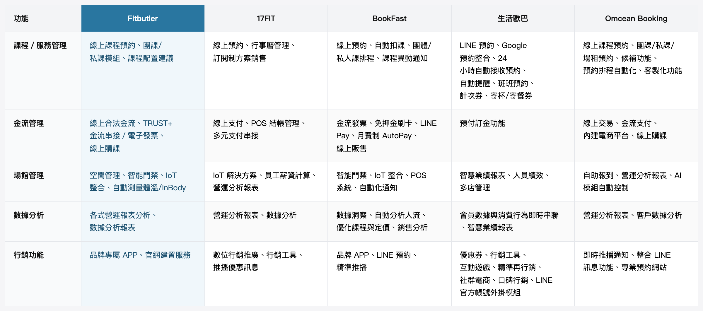
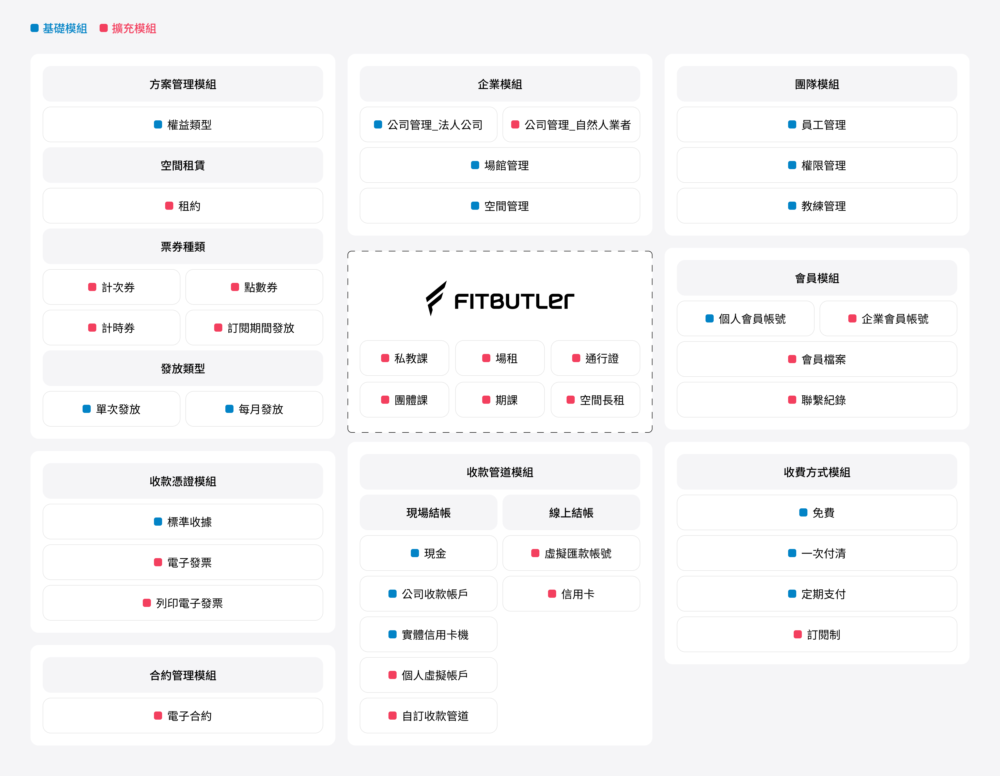
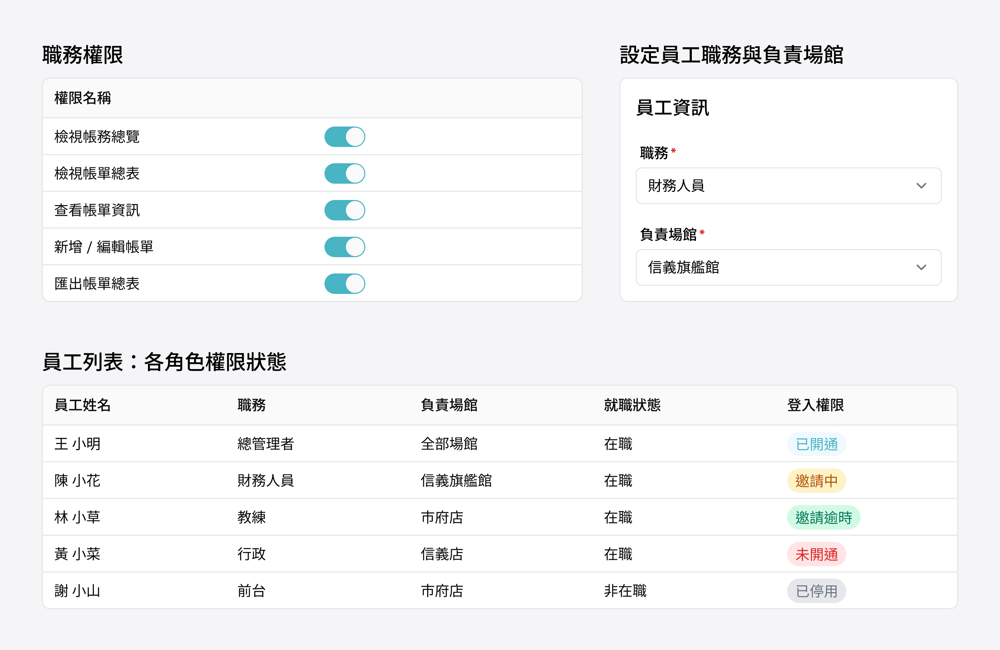
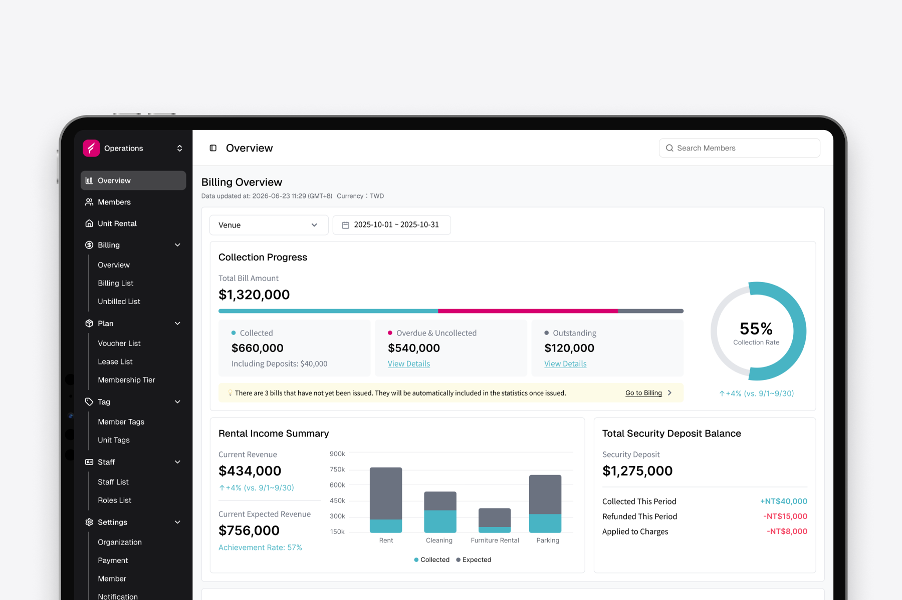
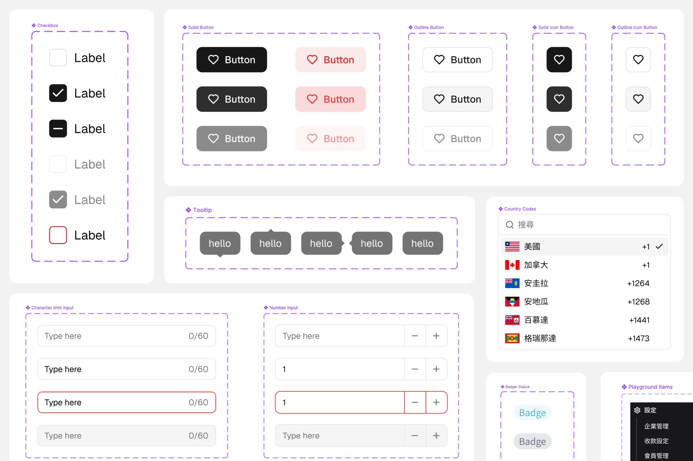
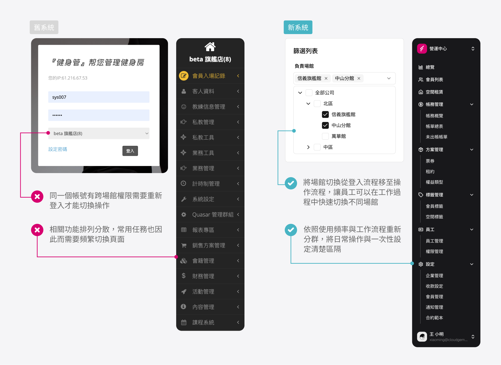
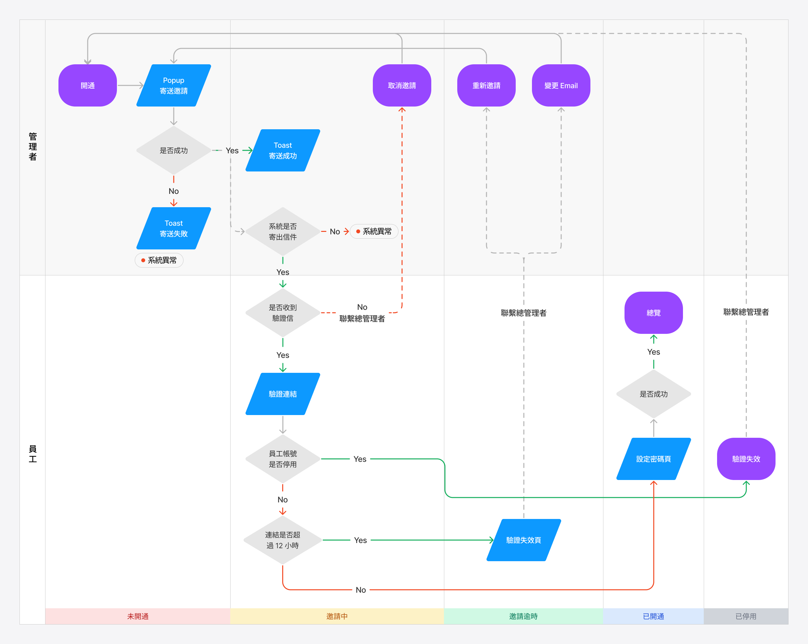
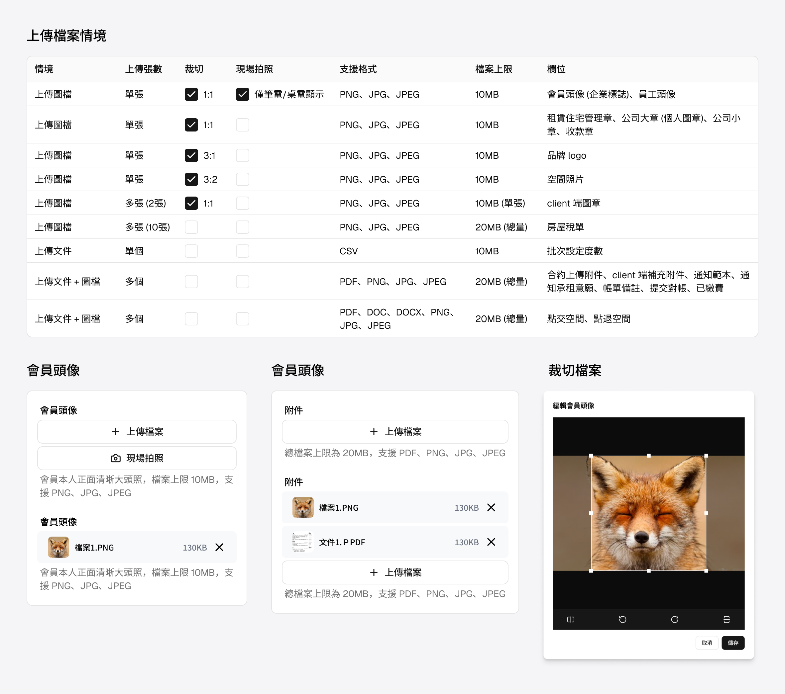

從單一產業到跨產業的 B2B SaaS 平台：Fitbutler 從 0 到 1 的模組化產品設計策略
Fitbutler 原本是一套為運動產業打造的管理系統，隨著產品開始服務空間租賃等不同產業，既有架構已無法支撐持續擴張，真正的挑戰不只是新增功能，而是重新定義一套能跨產業、跨國營運的產品架構。
在這個專案中，我負責產品設計策略、資訊架構、設計系統與跨團隊協作，透過模組化架構、權限控管與可擴展元件設計，建立一套能因應不同商業模式持續演進的 B2B SaaS 平台。

產業背景
快速成長的運動產業，帶來更複雜的營運需求
台灣運動產業近年快速成長，根據體育署統計，健身房數量從 2015 年的不到 500 家，成長至 2022 年已突破 1,500 家，年均成長率超過 10%。運動類型也從傳統健身房大幅多元化，室內高爾夫、皮拉提斯、匹克球等新興運動類型近年快速崛起，帶動大量新型態場館進入市場。
場館類型的多元化，也讓營運方式變得更加複雜。不同類型的場館有各自的收費模式、課程結構與會員管理需求，過去依賴人工作業或單一工具的方式已難以應對，數位化管理系統成為場館降低人力成本、支撐規模擴張的必要基礎。


現況與問題
技術老舊、使用體驗不佳、市場受限
三個問題直接限制了產品的成長與營收
公司原有的管理系統面臨三個根本問題，且都已無法靠局部修補解決。重建一套現代化系統，是唯一能讓業務繼續成長的方法。因此，我們決定從零開始重新打造一套可持續擴展的產品平台。
技術架構老舊
既有系統無法在原有基礎上新增功能或做大幅改動，且架構只支援運動產業，面對其他產業的需求完全無法承接。
缺乏設計規範
系統沒有統一的設計語言，使用者在不同頁面之間會遇到不同的操作邏輯，學習成本及出錯機率皆高。
無法跨國營運
系統不支援多時區、多幣別、多語系，完全無法承接有海外分館需求的品牌，直接造成客戶流失。
研究與發現
透過內部協作與競品分析
定義出七大核心需求，構成系統的基礎骨架
系統的主要使用者是運動場館的老闆與經營者，難以大量招募訪談，我們主要透過 PM、客服、業務團隊取得第一手資料，搭配海內外競品功能比對，找出系統缺少哪些關鍵功能導致客戶不願買單。
研究後發現，所有功能都能被歸納到七大核心需求上：企業管理、人員管理、方案管理、會員管理、合約管理、金流收款、數據報表，成為系統基礎架構與後續所有模組的起點。

困難與挑戰
如何讓同一套產品服務不同商業模式？
專案初期，產品主要服務運動產業，當公司開始拓展空間租賃市場後，我們很快發現兩個產業的共同能力與差異同時存在，兩個產業在人員管理、空間場租、合約簽署、金流收款上高度重疊，但在販售模式與帳務管理上幾乎沒有交集，運動產業以授課、票券、會員方案為主，空間租賃業則以租約、押金、長租計費為核心。
如果持續以客製化方式開發，每新增一個產業，就必須維護另一套流程與介面，不僅開發成本增加，也讓產品難以持續演進。因此，我們決定重新定義產品架構，而不是重新設計另一套系統。
設計決策
以彈性架構為核心，支援未來多產業及跨國營運的擴展能力
一、用模組化架構解決跨產業的彈性需求
我們建立了「共用核心模組＋可選擴充模組」的系統架構。企業、團隊、會員、方案、收款等基礎功能成為每個客戶預設擁有的核心模組，空間租賃業的租約管理、保證金等差異化需求則設計為可獨立開關的擴充模組。這樣的架構讓產品能在不修改核心流程的情況下，逐步支援更多產業，也降低後續功能開發與維護成本。

二、權限分層設計，兼顧產品彈性與資料安全
模組決定客戶購買了哪些功能，權限則決定組織內不同角色可以使用哪些功能，前台人員、場館管理者、財務、教練各自看到的介面與可操作的範圍都不同。
模組控制企業可使用的功能範圍，權限控制不同職務可存取的資料與操作，兩層架構讓業者能靈活配置每個職務的使用範圍，在系統彈性與資料安全之間取得平衡。

三、建立國際化產品架構，支援跨市場與跨產業營運
隨著產品開始支援海外市場，國際化不只是增加不同語言版本，而是需要從系統架構層面處理不同市場與產業的營運差異。
因此，我們從產品架構開始支援多時區、多幣別、多語系，同一個位置的文案可透過相同 key 值，依照客戶所屬產業顯示不同文案，例如運動產業使用「場館」，空間租賃業則使用「據點」，讓同一套產品能適應不同商業語境，而不需要建立不同版本。

四、建立設計系統，並導入 AI prototype 加速工程協作
我以現有元件庫 (Shadcn/ui) 為基礎，依據 Fitbutler 的品牌色與設計規範進行客製化，建立一套統一的設計語言，確保跨模組、跨產業的介面一致性，並降低工程開發的重複成本。

設計系統建立後，我進一步利用 Claude Code 串接 Figma MCP 與 Shadcn MCP，製作可互動的 AI prototype 給工程師參考，工程師可以直接在 prototype 上確認元件效果與轉場動畫，原本需要多次來回才能對齊的細節，透過 prototype 大幅縮短溝通成本。
關鍵設計成果
將設計策略落實為可擴展的產品能力
一、重新設計資訊架構，讓操作流程貼近實際營運
舊系統的導覽架構隨著功能增加逐漸失去一致性，例如跨場館需要重新登入才能切換，部分常用任務也因功能分散而需要頻繁切換頁面。
我重新整理資訊架構，依照使用頻率與工作流程重新分群，將日常操作與一次性設定清楚區隔，並將場館切換從登入流程移至操作流程，讓員工可以在工作過程中快速切換不同場館，使系統操作更符合實際工作流程。

二、重新設計員工權限流程，完善異常情境
我整理了員工建立與開通權限流程，員工帳號從未開通、邀請中、邀請逾時、已開通到已停用等各種狀態下，管理者與員工分別可以執行的操作，同時涵蓋驗證信逾期、帳號停用後重新啟用、更換 Email、角色調整等邊界情境，整理成完整流程圖，作為後續介面設計與工程開發的依據。
透過流程先行的方式，降低不同狀態下操作不一致的問題，也讓管理者在異常情境下仍能快速完成任務。

三、建立多語系設計規範，提升跨語系介面的使用一致性
在多語系介面設計過程中，我發現不同語言的文字長度差異，容易造成版面錯位與使用體驗不一致。因此，我建立多語系介面的設計規範，例如英文翻譯盡量控制與中文接近的長度、必要時使用業界常見縮寫，以及當文字長度存在差異時，以較長版本作為版面設計基準，降低未來語系擴充造成的修改成本。
此外，原本團隊透過 Google Sheet 管理大量翻譯內容，隨著翻譯數量增加，逐漸產生版本同步與維護效率問題。針對此問題，我嘗試利用 AI 工具建立翻譯管理工具的改善方向，並製作 prototype 進行驗證，探索提升設計與開發協作效率的可能性。
四、將元件做成可擴展的設計模式：以上傳元件為例
模組化不只應用在產品架構，也延伸到元件設計，隨著產品持續擴展，我開始盤點不同元件的使用情境。
以上傳元件為例，系統中包含頭像、Logo、合約附件等多種上傳情境，對格式、數量、裁切需求皆不同。我整理所有使用情境，並與工程團隊共同定義元件邊界，最後將檔案格式、數量限制、裁切方式等都設計成可獨立開關的參數，需求變動時只需調整參數，不需要重寫元件。
這套設計方式後續也應用到其他元件，降低重複設計與開發成本，同時提升設計系統的一致性與可擴展性。

專案成果
模組化架構讓 Fitbutler 從單一產業工具，成長為支援多產業的跨國營運平台
新系統上線後，最直接的驗證是真正承接了原本無法承接的產業，舊系統僅能服務運動產業且不支援多時區、多語系客戶，海外客戶及其他產業客戶只能直接拒絕。透過模組化架構設計，我們成功簽下空間租賃產業的新客戶，這是舊系統完全無法達成的服務類型。
模組化架構的價值不只在於讓系統更彈性，是可以直接擴大公司可以承接的市場範圍，讓 Fitbutler 從單一產業的管理工具，逐步成為能夠支撐多產業並跨國營運的平台。
學習與反思
保有生涯適應力，持續探索新領域、不斷嘗試與學習，才能在變化中找到自己的方向
這是我第一次負責 B2B 的大型系統，過去累積的 2C 經驗在意使用者的痛點、行為、轉換與留存，但 Fitbutler 面對的是完全不同的情境，客戶不再是一般的使用者，而是運動產業、空間租賃業的老闆及經營者，設計決策也不再只靠使用者研究或數據驅動，而是要考慮企業、角色、系統之間的連動邏輯。初期我花了不少時間學習產業知識，理解運動產業的商業模式，也重新學習如何站在系統面的角度拆解需求。這段經歷我也曾在 podcast 中分享，並寫成文章《從讀懂用戶到讀懂系統 — To B 設計師的挑戰與職涯挫折》。
這個過程中，我也開始嘗試把 AI 工具帶進日常工作流程，從整理需求、對齊想法，到用 Claude Code 製作可互動的 prototype，這些嘗試讓我重新思考，在 AI 時代下設計師在團隊裡可以扮演的角色，不只是輸出畫面，也能透過工具縮短跟工程端的溝通落差。
而整個專案推進的過程並不算順利，中途換過產品負責人、後端人力一度外包、團隊成員也經歷過許多調整與磨合，很多決策是在人力與方向都不穩定的狀態下持續往前推進的。這段經歷讓我理解到，系統架構的設計固然重要，但能不能把產品真正落地，往往取決於團隊在混亂中還能不能維持良好的溝通與判斷，這也是這次專案給我最實際的體悟。